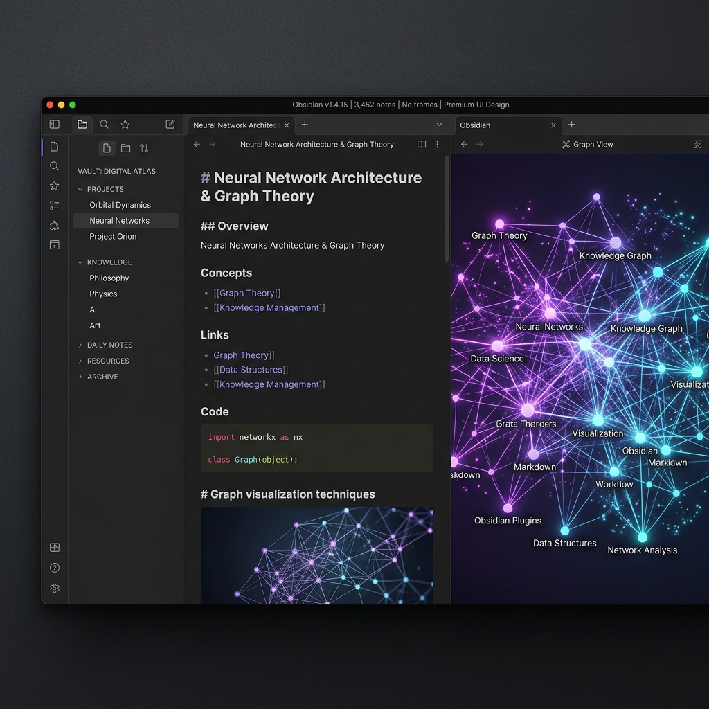

Setting Up AdGuard Home 1.0 Beta in an Ubuntu LXC
Deploy AdGuard Home's redesigned 1.0 Beta bare-metal in Proxmox. Fix Ubuntu port 53 stub conflicts, configure custom adlists, and explore 1-click service blocking.
I test, deploy, and break self-hosted software in my own lab so you do not have to. Get step-by-step, production-ready guides for Proxmox, Docker, and Obsidian, built for people who value their time and data privacy.
Deploy AdGuard Home's redesigned 1.0 Beta bare-metal in Proxmox. Fix Ubuntu port 53 stub conflicts, configure custom adlists, and explore 1-click service blocking.

Turn your notes into flashcards with zero markdown clutter. Master the modern FSRS algorithm vs SM-2, auto-generate cards with local AI, and track study streaks.

I ripped out my paid notification services and deployed Gotify. Learn how to push real-time alerts from Proxmox and Bash scripts straight to your phone.
Skip the endless tweaking. Get my personal Obsidian configuration folder to access a fully designed personal wiki environment containing optimized stylesheets, markdown templates, and hotkeys.

Structured engineering paths for self-hosted infrastructure and local-first software
Build high-availability hypervisor nodes on low-power mini PCs. Learn when to isolate kernel workloads in full KVM virtual machines versus bare-metal Linux Containers (LXC), automate provisioning with Terraform Infrastructure as Code, and maintain quorum across multi-node clusters.
Eliminate exposed router ports and ISP tracking across your local subnet. Deploy redundant DNS sinkholes with AdGuard Home and Pi-hole, route external traffic through outbound Cloudflare Zero Trust tunnels, and monitor service uptime with self-hosted push alerts.
Own your technical documentation in plain offline Markdown files that never lock you into a proprietary cloud. Configure encrypted multi-device synchronization via self-hosted CouchDB, integrate local Ollama LLMs for private note analysis, and retain knowledge with FSRS flashcards.
Browser-native calculators and configuration generators that run 100% locally with zero server telemetry
Select from curated self-hosted services (Nextcloud, Uptime Kuma, Gotify, Pi-hole, AdGuard, Jellyfin) to generate production-ready docker-compose.yml and separated .env secret files with custom volume mounts, restart policies, and PUID/PGID permissions.
Calculate host CPU core overcommitment ratios, ZFS ARC memory reservations, and NVMe storage allocations before deploying workloads. Compare memory footprints between unprivileged LXC containers and full KVM virtual machines with ready-to-run pct create CLI commands.
Plan RFC 1918 VLAN boundaries, CIDR netmasks, and DHCP pools with our visual subnet splitter, or model 24/7 home server electricity draw, kWh utility rates, and 3-year hardware TCO breakeven against legacy enterprise rack gear using the Power & Cost Calculator.
Tech Simpld is built and maintained by a Microsoft Certified Systems Engineer (MCSA) with over two decades of experience managing enterprise virtualization and multi-datacenter storage architecture. Every command block, systemd unit, and network diagram published here is validated in our physical Proxmox testing cluster before publication.
We focus on practical, reproducible configurations for hobbyists and self-hosters who want enterprise reliability without enterprise licensing costs or cloud lock-in.
Read Our Lab Architecture & Mission →